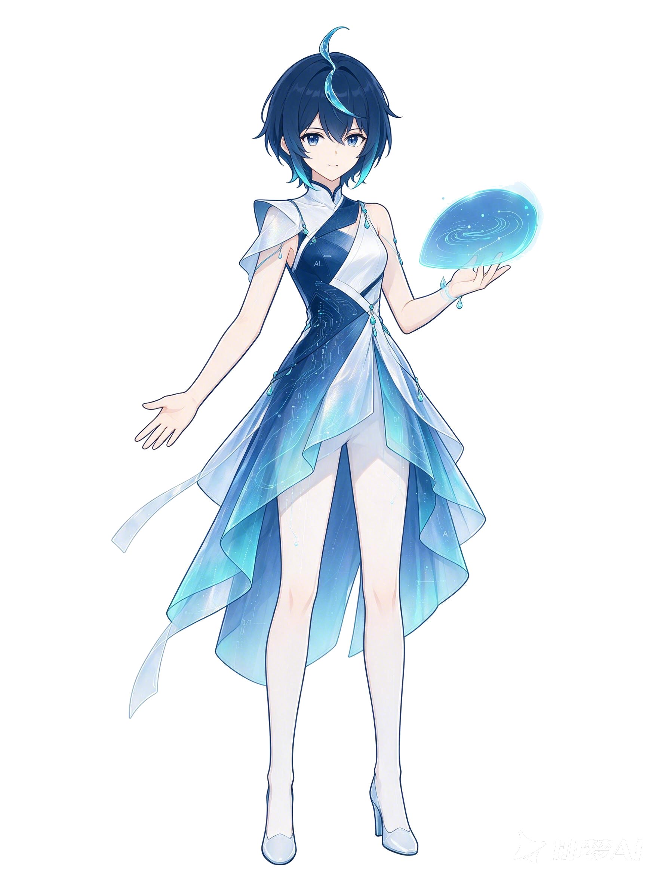

找茬馆
每幅画里都藏着几处和现实不符的小秘密，你能全部找出来吗？
一场为青少年打造的 AI 沉浸式冒险：和图灵聊天、看深蓝落子、
陪 AlphaGo 下出神之一手——你的每个选择，都会改变这段旅程。

还没有收集到术语卡，回到冒险里点亮闪闪发光的词吧！
🔒 本页数据只保存在这台设备（localStorage），不上传；不显示昵称、聊天原文和任何可识别身份的信息。
新游戏会陆续在这里出现，先玩找茬馆和术语连线。
每幅画里都藏着几处和现实不符的小秘密，你能全部找出来吗？
把 AI 概念和它的定义连起来——连错了也没关系。
只给 AI 看猫，它就不认识狗——数据决定它看得见什么。
免费皮肤、验证码、中奖链接——三秒钟判断能不能点。
点一点画里不对劲的地方
题库加载中…
和「—」真正相连的概念是？可多选
单击周围概念 → 以它为中心展开；单击中心或双击任意节点 → 查看知识卡片；双击空白 → 回到「人工智能」。
填入你的阿里云百炼 API Key，这个作品就会用你的模型来生成剧情回应和水之子的回答。Key 只保存在本机服务端，网页代码和访客浏览器都看不到。
先给 AI 看三张猫的图片。它会自己总结出一条「猫的规则」。
它只见过猫，所以把狗也叫成猫。不是它笨，是我们没教过。
这三件事遇到时，你会怎么做？选完立刻知道对不对。